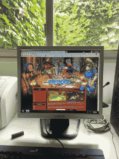

Other Computer Projects
This section highlights some of my projects, though I've developed many others
that aren't included, either because they don't fit here or because I don't
find them significant enough to add. Oh bother.
-
p5.clickable
2019
Event driven, easy-to-use button library for P5.js. It even ended up in a P5 book. I'm in a book!
-
Larturead
2024
Web reimplementation of BeKnowledge, my reading tool for reading fast.
-
dir
2024
This is a tiny script I use to display the contents of a directory in my terminal in a fashion similar to MS-DOS's dir, which I like better than the usual ls.
-
GBA-Dev
2023
Some tests and a half-baked (but very performant) pixel graphical library for Gameboy Advance game development.
-
TunaBB
2023
A bulletin board designed from scratch to be self-contained, easy to deploy, easy to customize and easy to extend.
-
Mitsubachi
2019
Mitsubachi is a tiny and open chat protocol, designed to be minimal, easy to implement, easy to use and easy to understand. Mitsubachi supports nicknames, nickname changing, user-to-user messaging and channel / group (known in Mitsubachi as 'distribution lists') chat.
-
tmon
2020
tmon, the YouTube Monitor, is a tool to make regular, local backups of your YouTube music playlists. It's pronounced te-mon, with te like in tetris and mon like in monitor.
-
OpenNapkin
2020
OpenNapkin is a graphical Gopher client written in Gambas3. I wrote OpenNapkin because I wasn't able to find another Gopher client that wasn't written only for console or that wasn't part of a much bigger web-browsing suite.
I'm most probably forgetting something.